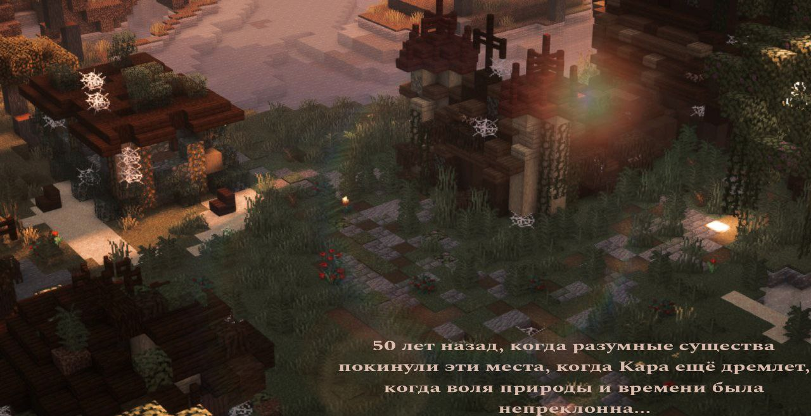

<!DOCTYPE html>
<html lang="ru">

</html>

<head>
    <title>Unburning and Collapse SMP</title>
    <link rel="stylesheet" href="sheet.css">
    <link rel="icon" type="image/x-icon" href="../img/minecraft_logo.ico">
    <meta charset="UTF-8">
    <meta name="viewport" content="width=device-width, initial-scale=1.0">
</head>

<body>

    <div class="header">
        <div class="nav-links" id="navLinks">
            <div class="dropdown">
                <button class="button" onclick="toggleMenu()">&#9776;</button>
                <div class="dropdown-content" id="dropdownMenu">
                    <a href="../chrsheets/soon.html">Кредиты</a>
                    <a href="../index.html#contact">Обратная связь</a>
                    <a href="../chrsheets/soon.html">О нас</a>
                    <a href="../gallery.html">Галерея</a>
                </div>
            </div>

            <a href="../lore.html">Лор</a>
            <a href="../character-bios.html">Анкеты персонажей</a>
            <a href="../index.html">Главная</a>
        </div>
    </div>

    <div class="post">
        

        <h1>Церковь</h1>

        <p>
            На территории Матéра находиться церковь на протяжении нескольких столетий, однако, в чем её суть? Религия
            один из основных факторов определяющий развитие культуры, а так же, в нашем случае и двигатель сюжета,
            поэтому распишу подробнее о нём.
            <br><br>
            <span style="color:white;">👁𐌏НŃ.</span>
            <br><br>
            ๋࣭⭑&#10087; Единственным и важнейшим божеством являются Они. Древние источники, оставленные жителем
            небольшой деревушки,
            которая находилась на территории современного Матéра несколько десятилетий назад описывают Их так:
            <br><br>
            <cite>
                "Они всегда смотрят за нами, изучают. Они зарождаются с существом и вместе проживают его жизнь. Они же
                наблюдают и со стороны.<br>
                Хранят в себе воспоминания всего сущего. Они как огромная библиотека, где находится книга о каждом
                существе, будь оно даже домашним зверем, ведь дай животному способность мыслить и оно будет способно и
                грешить."
            </cite>
            <br><br>
            &#124;&#124; Источник был переведён на более современный вариант языка, ибо первоначальная версия может быть
            нечитаема для сегодняшних существ;
            <br><br>
            <span style="color:white;">Однако, Они как капризный выродок, что всё просит и просит, требует исполнить
                невыполнимые условия!</span>
            <br><br>
            Отталкиваясь от этого, можно сказать что воспоминания играют довольно важную роль в формировании личности, 
            именно поэтому существо с каждой смертью теряет именно их, теряет самого себя.
            <br><br>
            <cite>"Козлёнок тоже считает своего хозяина добрым, ведь тот кормит его. Но он так упорно игнорирует
                цыпленка за забором, которому отрубили голову сегодня утром."</cite>
            <br><br>
            Насчёт библиотеки, найденой в полуразрушенном храме. Вероятно, это является обязательным объектом при
            постройке церкви, ведь книги являются такими же частичками любого создания, его мыслями и, конечно,
            воспоминаниями. Так Им легче быть наблюдателем.
        </p>
        <div class="secret-link">
            <a href="secret1.html">d0 9e d0 9d d0 98</a>
        </div>
    </div>

    <script>
        function toggleMenu() {
            const menu = document.getElementById("dropdownMenu");
            menu.style.display = (menu.style.display === "block") ? "none" : "block";
        }

        // Close the dropdown if the user clicks outside of it
        window.onclick = function (event) {
            if (!event.target.matches('.button')) {
                const dropdowns = document.getElementsByClassName("dropdown-content");
                for (let i = 0; i < dropdowns.length; i++) {
                    const openDropdown = dropdowns[i];
                    if (openDropdown.style.display === "block") {
                        openDropdown.style.display = "none";
                    }
                }
            }
        }

    </script>
</body>